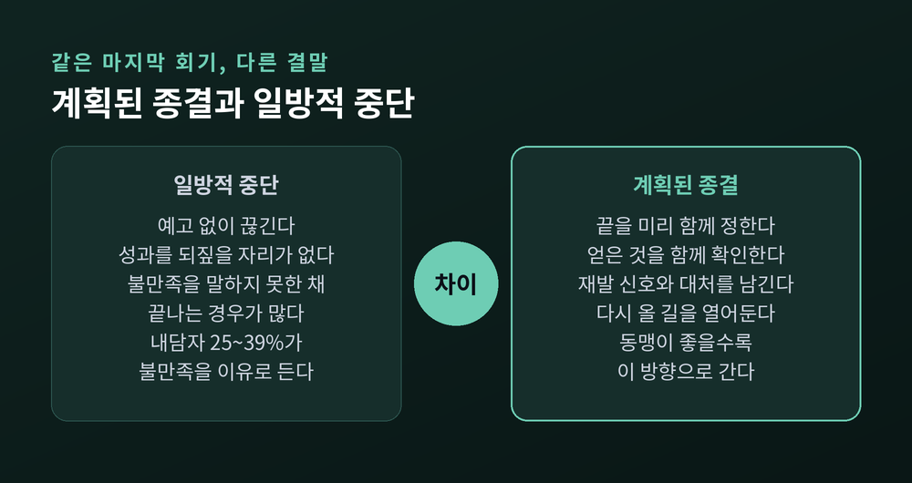
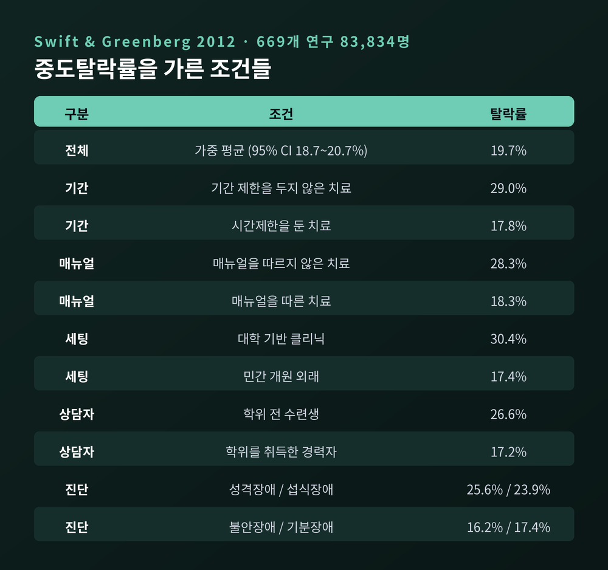
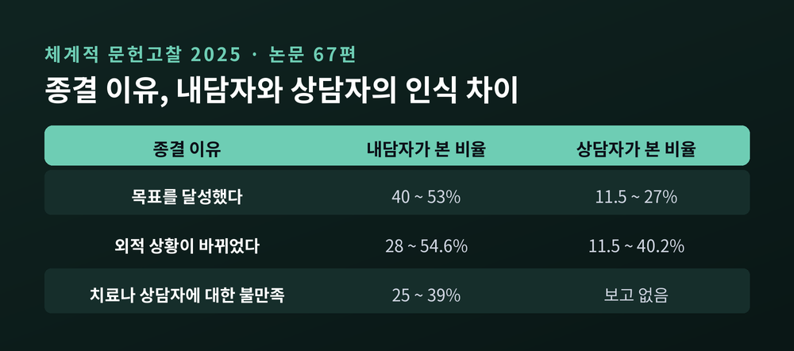
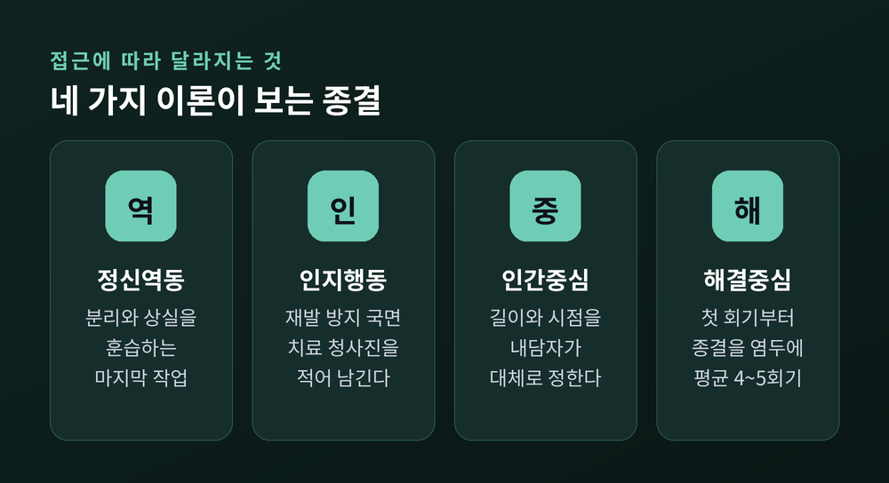
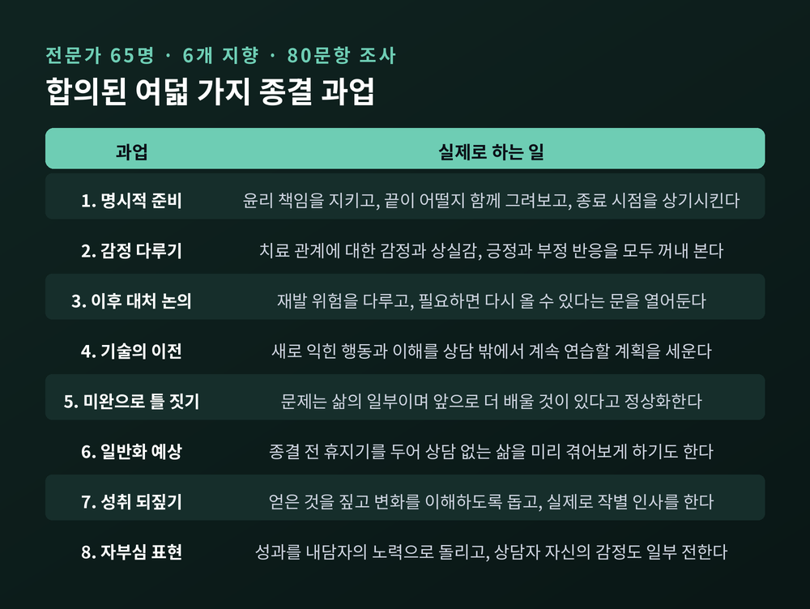
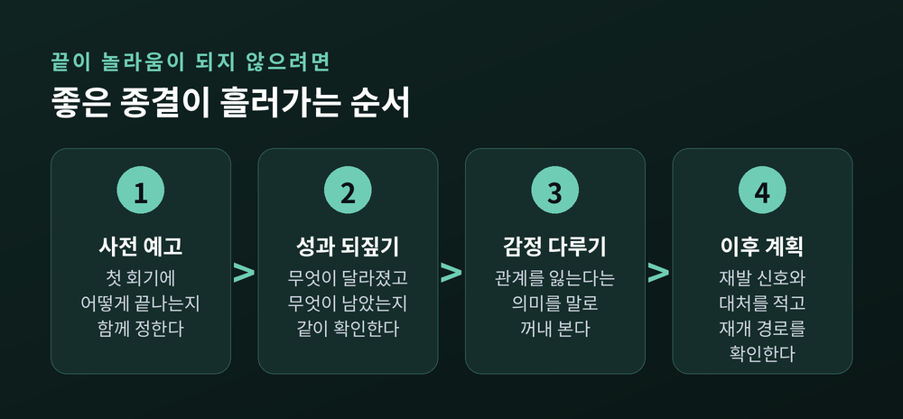

상담 종결의 심리학, 잘 끝내는 일이 왜 치료의 일부인가
계획된 종결과 중도탈락의 차이부터 이론별 관점, 여덟 가지 종결 과업까지

이번 글에서는 상담이 끝나는 과정, 곧 종결(termination)을 정리해 보겠습니다. 잘 끝내는 일이 왜 치료의 마지막 단계로 따로 다뤄지는지, 계획된 종결과 중도에 끊기는 상담은 무엇이 다른지를 살펴봅니다. 이론별 관점과 실제 연구 수치, 그리고 아직 밝혀지지 않은 부분까지 함께 보겠습니다.
먼저 핵심만 세 줄로 정리합니다.
- 상담 종결은 사건이 아니라 과정입니다. 마지막 회기에 치르는 절차가 아니라, 치료의 한 국면으로 다뤄집니다.
- 성인 심리치료의 평균 중도탈락률은 19.7%입니다. 다만 조건에 따라 0%에서 74%까지 벌어집니다.
- 좋은 종결의 조건은 이론을 가리지 않습니다. 숙련된 상담자들은 지향이 달라도 거의 같은 일을 합니다.
상담은 네 가지 방식으로 끝납니다
2025년에 나온 체계적 문헌고찰이 종결의 유형을 네 갈래로 정리했습니다. 성인 개인 심리치료의 종결 국면을 다룬 논문 67편을 모아 분석한 연구입니다.
첫째는 상호 결정에 의한 종결입니다. 대개 내담자가 치료 목표를 이룬 경우입니다. 둘째는 일방적 종결입니다. 불만족 때문에 내담자가 혼자 그만두는 경우로, 흔히 조기종결이나 중도탈락이라 부릅니다. 셋째는 강제 종결입니다. 상담자가 떠나거나 근무지를 옮기면서 끝나는 경우입니다. 넷째는 이관으로, 다른 상담자나 기관에 넘겨지는 경우입니다.
여기에 반드시 구분해야 할 개념이 하나 더 있습니다. 종결과 유기(abandonment)입니다.
종결은 전문적 관계가 윤리적·임상적으로 적절한 절차를 거쳐 끝나는 과정입니다. 유기는 내담자의 남은 치료 필요를 제대로 다루지 않은 채 관계를 끝내버리는 것입니다. 내담자가 더 이상 치료비를 낼 수 없게 되자 갑자기 상담을 중단하는 경우가 전형적인 예로 꼽힙니다.
거꾸로, 내담자가 스스로 상담을 그만두는 것은 유기가 아닙니다. 논의와 통지를 거치고 필요한 의뢰를 했다면, 그 역시 유기가 아닙니다.

다섯 명 중 한 명 — 숫자가 보여주는 현실
가장 널리 인용되는 자료는 스위프트와 그린버그가 2012년에 발표한 메타분석입니다. 669개 연구, 내담자 83,834명을 모았습니다.
전체 가중 평균 중도탈락률은 19.7%였습니다. 대략 다섯 명 중 한 명이 충분한 치료를 받기 전에 상담을 떠난다는 뜻입니다.
그런데 이 숫자를 그대로 받아들이면 곤란합니다. 연구 간 이질성이 대단히 커서(I²=93.32), 개별 연구의 탈락률은 0%에서 74.23%까지 흩어져 있었습니다. 저자들도 하나의 평균값이 모든 상황을 대변하지 못한다고 밝힙니다.
정작 흥미로운 것은 무엇이 이 차이를 갈랐는가입니다.
치료 이론 사이에는 유의한 차이가 없었습니다. 인지행동 18.4%, 정신역동 20.0%, 해결중심 19.2%, 지지적 접근 17.3%로 고만고만했습니다. 어느 학파가 덜 이탈시킨다는 근거는 나오지 않은 셈입니다.
대신 갈라진 것은 다른 요소들이었습니다.

기간을 정해두지 않은 치료는 29.0%, 시간제한을 둔 치료는 17.8%였습니다. 매뉴얼 없는 치료는 28.3%, 매뉴얼을 따른 치료는 18.3%였습니다. 세팅으로 보면 대학 기반 클리닉이 30.4%로 가장 높았고, 민간 개원은 17.4%로 가장 낮은 축이었습니다.
상담자의 경력도 갈랐습니다. 학위를 마치지 않은 수련생이 맡았을 때 26.6%, 학위를 취득한 경력자가 맡았을 때 17.2%였습니다.
내담자 쪽에서는 진단에 따라 성격장애 25.6%, 섭식장애 23.9%, 불안장애 16.2%로 차이가 났습니다. 탈락한 사람은 평균적으로 더 어렸고, 교육 연한이 짧았습니다. 성별과 인종, 혼인 상태에서는 유의한 차이가 나오지 않았습니다.
한 가지 더 눈에 띄는 대비가 있습니다. 통제된 조건에서 진행한 효능 연구는 17.0%, 실제 현장을 관찰한 효과성 연구는 26.0%였습니다. 현실이 늘 더 거칩니다.
내담자와 상담자는 같은 종결을 다르게 봅니다
앞서 언급한 2025년 문헌고찰에서 가장 인상적인 대목은 인식의 어긋남이었습니다.
목표를 달성해서 상담을 끝냈다고 답한 내담자는 40~53%였습니다. 같은 사안을 두고 상담자가 그렇게 본 비율은 11.5~27%에 그쳤습니다. 삶의 상황이 바뀌어 끝났다는 외적 요인도 내담자는 28~54.6%로 꼽은 반면 상담자는 11.5~40.2%로 보았습니다.
그리고 내담자의 25~39%는 치료나 상담자에 대한 불만족을 종결 이유로 들었습니다.

이 어긋남은 오래된 발견이기도 합니다. 1999년 연구에서도 목표 달성을 종결 이유로 든 비율이 내담자 38.6%, 상담자 26%로 갈렸습니다. 상담자는 내담자가 얻어 간 것을 실제보다 적게 잡는 경향이 있다는 해석이 붙습니다.
반대 방향의 사각지대도 있습니다. '흥미가 떨어져서'를 이유로 든 내담자는 실제로는 불만족한 경우가 많았습니다. 상담이 제자리를 도는 것 같거나 오히려 나빠진다고 느끼면서도, 그 말을 꺼내지 못한 것입니다.
종결 시점 자체도 어긋납니다. 계획대로 끝난 상담이 약 40%, 계획보다 이르게 끝난 상담이 37%, 늦게 끝난 상담이 23%였습니다. 이르든 늦든, 계획에서 벗어난 종결은 모두 내담자 불만족과 연결되었습니다.
같은 문헌고찰은 관계의 질과 종결 방식이 붙어 있다는 점도 확인합니다. 치료 동맹이 좋을수록 상호적이고 계획된 종결로 이어졌고, 동맹에 균열이 생겼을 때 일방적 종결이 많았습니다.
종결이 상실을 건드리는 이유
정신역동 전통은 오래전부터 종결을 상실 작업으로 다뤄왔습니다. 한 애착 이론가는 이렇게 정리합니다. 애착과 분리는 떼어놓을 수 없고, 애착된다는 것은 곧 상실의 가능성을 감수하는 일이라고요.
같은 관점에서 보면 애착 유형에 따라 종결의 모습이 달라집니다.
회피 성향이 강한 사람은 상담이 끝나는 일의 정서적 측면을 부인합니다. 분노와 두려움과 슬픔이 부인된 채로도 여전히 행동에 영향을 준다는 것을 볼 수 있게 도와야 합니다. 양가 성향이 강한 사람은 상담에 매달립니다. 필요할 때 찾아갈 수 있는 내면의 상담자를 품은 채 헤어짐을 견딜 수 있다는 자신감을 쌓아주는 작업이 필요합니다. 혼란 성향이 강한 사람에게 종결은 중대한 위협이 되므로, 완만하게 늘려가며 끝내는 방식이 대체로 낫다고 봅니다.
다만 여기서 균형을 잡아야 합니다.
예전에는 종결을 위기로 보는 관점이 우세했습니다. 끝이 다가오면 증상이 되살아나고 힘들어지리라는 예상이었습니다. 지금은 다르게 봅니다. '위기로서의 종결' 가설은 실증적 지지를 거의 얻지 못했습니다. 대신 지지를 받은 것은 '발달로서의 종결'이라는 관점입니다. 종결이 성장의 촉매로 작동해 그동안의 작업을 한 덩어리로 굳혀준다는 설명입니다.
실제 연구에서 내담자들이 종결기에 가장 흔히 보고한 감정은 자부심, 성취감, 독립감, 차분함이었습니다. 상담자 쪽에서 가장 높게 나온 반응 역시 자부심이었습니다.
여기에 중요한 함의가 붙습니다. 상담자는 내담자가 종결을 더 힘들어하리라 예상하는 경향이 있는데, 정작 가장 흔한 것은 긍정적 감정이라는 점입니다.
물론 예외가 있습니다. 상실 이력이 있는 사람, 상담에서 상실이 주요 주제였던 사람은 종결 반응을 이야기하는 것을 훨씬 중요하게 여겼습니다. 이들에게 종결은 위기이면서, 잘 다뤄질 경우 교정적 종결 경험이 되는 기회이기도 합니다.
내담자의 69%가 종결에 대한 자기 반응을 상담자와 이야기할 기회 자체를 가치 있게 여겼다는 결과도 같은 맥락에 있습니다.
이론마다 종결을 다르게 봅니다
접근에 따라 종결의 의미와 절차가 달라집니다. 네 가지만 짚겠습니다.

정신역동은 종결을 분리와 상실을 훈습하는 마지막 치료 작업으로 봅니다. 애착의 관점에서 보면 상실과의 화해는 전문적 관계를 맺는 순간 시작되어, 과거의 애착과 상실을 되살리는 전이를 거쳐, 분리의 수용과 전이의 퇴색으로 마무리됩니다.
인지행동치료는 재발 방지 국면으로 다룹니다. 여기서 쓰는 도구가 치료 청사진(blueprint)입니다. 그동안 해온 작업을 요약하고, 어떤 연습이 잘 통했는지, 그것을 어떻게 하는지를 함께 적어 남깁니다. 도움이 됐던 전략에 나중에도 다시 손이 닿게 하려는 장치입니다. 목표는 분명합니다. 상담을 떠날 때 스스로의 치료자가 되는 법을 안다고 느끼는 것입니다.
인간중심은 자율성에 무게를 둡니다. 내담자가 속도뿐 아니라 상담의 길이와 종결 시점도 대체로 스스로 정합니다. 돕는 사람이 도움받는 사람보다 더 잘 안다는 권위를 쥐기 시작하는 순간 이 접근의 토대가 무너진다는 경고가 붙어 있습니다.
해결중심은 아예 첫 회기부터 종결을 염두에 둡니다. 첫 회기를 포함한 모든 회기가 마지막 회기가 될 수 있다고 전제합니다. 실제로 평균 회기 수는 4~5회, 가장 흔한 회기 수는 1회로 보고됩니다.
전문가 65명이 합의한 여덟 가지
종결에 관해 가장 실용적인 자료는 2017년에 나온 조사입니다. 정신분석·인본주의·인지행동·대인관계·다문화·통합 등 여섯 개 지향의 전문가 65명에게 80문항짜리 종결 과업 설문을 돌렸습니다.
결과는 다소 의외였습니다. 이론적 지향이 달라도 숙련된 상담자들은 종결에서 하는 일이 상당히 겹쳤습니다. 경험이 쌓일수록 같은 학파의 초심자보다 다른 학파의 숙련자와 더 비슷해진다는 기존 연구와 맞아떨어지는 결과였습니다.

특히 세 번째와 여섯 번째 항목이 눈에 띕니다. 필요하면 다시 올 수 있다는 문을 열어두는 일, 그리고 종결 전에 일부러 휴지기를 두어 상담 없는 삶을 미리 겪어보게 하는 방법입니다. 끝을 한 번에 떨어뜨리지 않고 완만하게 만드는 장치들입니다.
저자들은 이 여덟 가지가 결국 치료 초기에 관계를 세울 때 했던 일을 다시 한 번 되짚는 것이라고 정리합니다. 조기종결을 줄이는 것으로 확인된 전략이 희망 강화, 동기 증진, 동맹 촉진, 진전의 평가와 공유인데, 종결에서 하는 일도 결국 같은 것들이라는 설명입니다.
좋은 종결이 흘러가는 순서
윤리 지침 쪽에서도 같은 결이 나옵니다. 미국심리학회 윤리강령 10.10은 내담자가 더 이상 도움을 필요로 하지 않거나, 이익을 얻을 가능성이 없거나, 지속이 오히려 해가 되는 것이 분명할 때 치료를 종결한다고 규정합니다. 그리고 종결 전에 종결 전 상담을 제공하고 적절한 대안 제공자를 제안하도록 명시합니다.
한국상담심리학회 윤리규정도 비슷한 구조입니다. 종결 기준을 같은 방식으로 정해두고, 내담자가 다른 전문가를 필요로 할 경우 적절한 과정을 거쳐 의뢰하거나 정보를 제공하되 의뢰와 관련한 비용은 받지 않는다고 규정합니다.

실무 지침으로 자주 인용되는 정리는 여섯 가지입니다.
- 처음부터 종결을 다룬다. 사전동의 단계에서 상담이 어떻게 끝나는지를 알린다.
- 치료 목표와 성공적 종료의 기준에 합의한다.
- 상담자 쪽 사정으로 인한 중단에 대비하고, 전문적 유언장을 마련해 둔다.
- 내담자 쪽 중단에도 대응한다. 목표 달성 전에 끊긴 경우 연락해 남은 필요와 대안을 안내한다.
- 유기가 무엇이고 무엇이 아닌지 분명히 해둔다.
- 진전과 종결에 관해 계속 대화한다.
세 번째 항목은 다소 낯설게 들릴 수 있습니다. 질병이나 사망처럼 예측하기 어려운 사건이 일어나면, 내담자에게는 치료의 중단과 상담자의 상실이라는 타격이 동시에 옵니다. 그래서 동료와 미리 약속을 맺어 유고 시 연락과 의뢰를 맡기라는 권고가 붙습니다.
수련생이 상담을 맡는 경우도 같은 맥락에서 다뤄집니다. 수련생에게는 기관 근무 종료일이 정해져 있습니다. 내담자는 자신의 상담자가 앞으로 다섯 달 있을지 다섯 주 있을지를 처음부터 알 권리가 있다는 것입니다.
여기서 가장 자주 인용되는 문장은 짧습니다. "가능하다면 상담의 끝이 놀라움이어서는 안 됩니다."
상담자에게도 종결은 어렵습니다
종결을 미루거나 회피하는 쪽이 늘 내담자인 것은 아닙니다.
연구에 따르면 상담자의 애도 반응은 종결기의 불안·우울감과 함께 움직였습니다. 장기 상담에서 상담자나 내담자 중 한쪽이라도 상실 이력을 가진 경우, 상담자는 종결기에 더 불안해했습니다. 관계가 깊었을수록 상담자 쪽에도 슬픔이 남습니다.
수련생은 더 취약합니다. 로테이션 종료로 강제 종결을 겪은 박사전 인턴 연구에서, 절반 가량이 스스로를 준비가 충분하지 않았다고 평가했습니다. 가장 흔히 보고된 감정은 슬픔과 죄책감, 그리고 안도감이었습니다. 2025년 문헌고찰도 같은 방향을 확인합니다. 내담자가 갑자기 그만두는 종결은 특히 학생 상담자에게 분노와 좌절, 죄책감을 남겼습니다.
구조적인 문제도 있습니다. 수련생은 성공적이고 계획된 종결을 연습할 기회 자체가 적습니다. 조기종결률이 더 높고, 실습지를 옮기며 사례를 넘겨야 하기 때문입니다. 종결에 초점을 둔 수퍼비전이 따로 필요하다는 제언이 나오는 이유입니다.
한국 상담 현장에서 확인된 것
국내 연구도 같은 지점을 짚습니다.
초심 상담수련생과 내담자를 각각 면접해 개념도 방법으로 분석한 연구에서, 수련생이 지각한 조기종결의 이유는 네 개 군집으로 묶였습니다. 상담자의 역량 부족, 내담자의 저항, 상담자와 내담자의 부조화, 그리고 상담자의 방어적 반응입니다. 마지막 항목이 특히 눈에 띕니다.
대학상담센터에서 10회기 이전에 상담을 끝낸 내담자 11명을 심층면접한 2024년 연구에서는 다른 목록이 나왔습니다. 상담에 대한 불신과 염려, 상담자의 부적절한 행동, 상담자의 낮은 상담역량, 상담에 대한 부정적 인식입니다.
이 결과는 국제 자료와 결이 맞습니다. 스위프트와 그린버그의 메타분석에서도 대학 기반 클리닉의 중도탈락률이 30.4%로 가장 높았습니다. 수련 기능을 함께 수행하는 기관의 구조적 조건이 반영된 수치로 읽힙니다.
종결이 다가올 때, 내담자가 해볼 만한 것
정리해보면 내담자 입장에서 할 수 있는 일도 분명해집니다.
끝내고 싶은 마음이 들면 그 마음부터 말한다. 연구가 반복해서 보여준 것은, 내담자가 불만족을 말하기 어려워하고 상담자는 그것을 모른 채 지나가기 쉽다는 사실입니다. 그만두겠다는 결론보다, 그만두고 싶어진 이유를 먼저 꺼내는 편이 낫습니다.
무엇이 달라졌는지 스스로 정리해본다. 상담자는 내담자가 얻어 간 것을 실제보다 적게 잡는 경향이 있습니다. 변화를 확인하는 작업은 내담자 쪽에서도 해볼 만합니다.
다시 나빠질 때의 계획을 세워 남긴다. 어떤 신호가 위험 신호인지, 그때 무엇을 해볼지, 누구에게 연락할지를 적어두는 것입니다. 인지행동치료의 청사진이 하는 일이 정확히 이것입니다.
다시 올 수 있는 경로를 확인한다. 한 연구에서는 마지막 회기에 상담자의 69.9%가 필요하면 다시 오라고 초대했습니다. 초대를 받지 못했다면 먼저 물어봐도 됩니다.
한계도 함께 적어둡니다. 흔히 권해지는 부스터 세션의 근거는 아직 엇갈립니다. 심리치료적 재발 예방 개입이 12개월 시점 재발을 22% 낮췄다는 메타분석 결과가 있는 반면, 2025년 종단연구는 부스터 세션 자체가 재발 위험에 임상적으로 의미 있는 영향을 주지 못했다고 보고했습니다. 아직 정리되지 않은 영역입니다.
정리하면 이렇습니다.
상담의 종결은 치료가 끝난 뒤에 남은 행정 절차가 아닙니다. 연구가 일관되게 가리키는 것은 하나입니다. "종결은 사건이 아니라 과정입니다." 그리고 그 과정은 상담 첫날, 어떻게 끝날 것인지를 함께 이야기하는 데서 이미 시작됩니다.
여기에 실린 사례와 설명은 모두 일반화된 내용이며, 개인의 상태에 대한 진단이나 치료를 대신하지 않습니다. 지금 상담을 받고 있고 종결이 다가오거나 그만두고 싶은 마음이 든다면, 혼자 결론 내리기보다 그 마음 자체를 담당 상담자에게 이야기해 보시길 권합니다. 어려움이 크다면 전문 상담사나 정신건강의학과 전문의의 도움을 받아보시면 좋겠습니다.
잘 끝내는 경험이 치료가 될 수 있느냐고 물으신다면, 연구는 그렇다고 답하는 쪽에 서 있습니다.